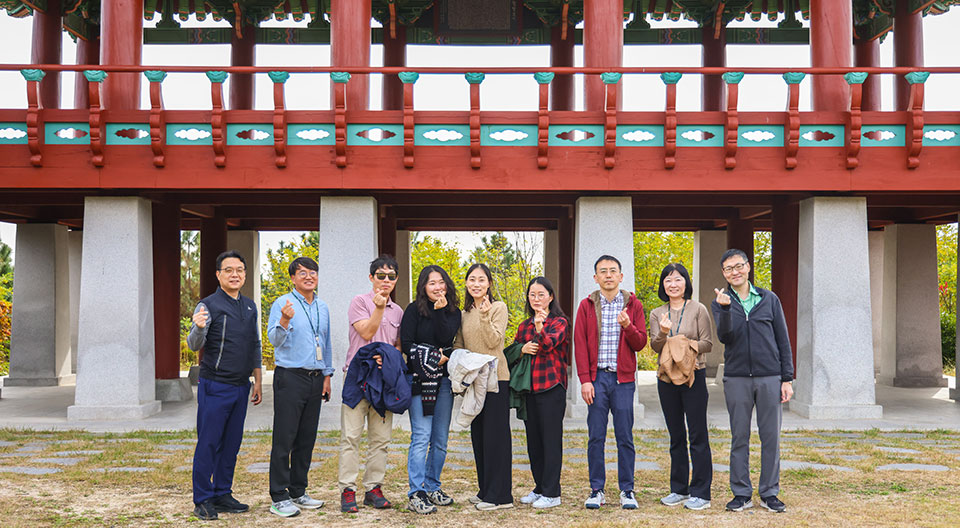
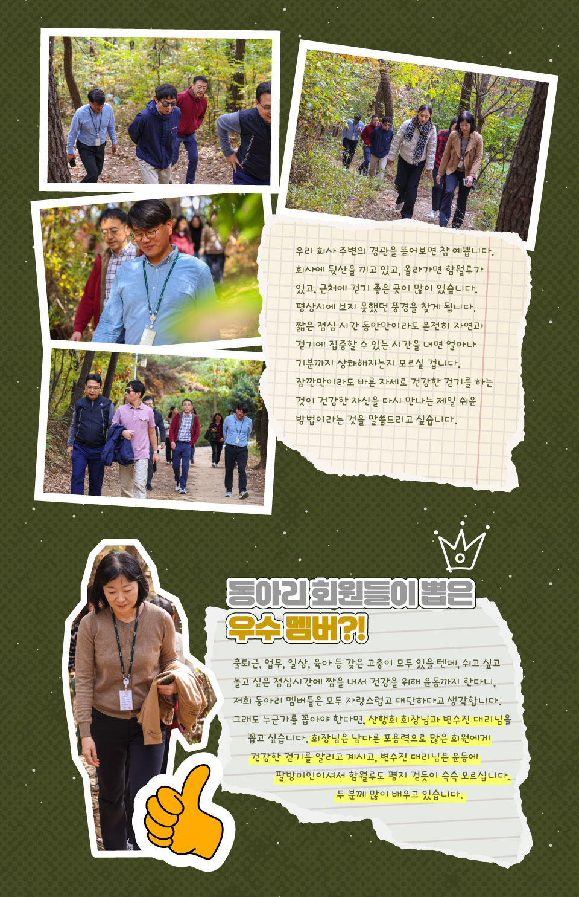

갑자기 찾아온 가을의 햇살이 마음까지 따뜻하게 적시던 어느 날 오후, 공사의 산행회 ‘건강한 걷기’ 회원들이 본사와 가까운 뒷산을 찾았다. 단순히 걷기를 좋아하는 몇몇 사람이 모여 시작한 동아리가 이제는 약 60명의 회원이 함께하는 모임으로 성장했다. 건강한 삶을 위해 걷는 사람들이 모인 만큼, 산길을 걸어가는 회원들은 걷는 내내 서로 밝은 미소로 건강한 대화를 나눴다. 올해 석유사랑에서 소개하는 KNOC의 마지막 동아리, ‘산행회’의 활동을 소개한다.

그저 걷기 좋아하는 사람들이 만든 ‘산행회’
2023년, KNOC의 동아리 ‘산행회’는 걷기를 좋아하는 몇몇 사람이 모여
만들어졌다. 그러던 중, 현재는 활동하고 있지 않은 동아리 ‘산악회’의
활동을 이어받으며 본격적인 동아리 활동을 시작하게 되었다. 몇
명으로 시작한 산행회는 이후 꾸준히 성장해, 회장 1명, 총무 1명,
고문 1명을 포함한 약 60명의 회원이 함께하는 동아리로 자리 잡았다.
“말 그대로 ‘산길을 걸어’갑니다.” 산행회
회원들은 매주 수요일 점심에 모임을 갖는데 회의와 출장, 개인 사정
등으로 짬을 내기 쉽지 않아서 많으면 10명, 적으면 3명일 때도
있다고. 1시간 동안 하늘과 산, 자연과 길을 보면서 온전히 걷는
시간을 가지고 함께 식사 후 짧은 인사를 나누고 업무로 복귀하는
시간이 너무도 소중하다고 말한다.
동아리 가입 조건은, 운동화만 있으면 끝!
동아리에 들어올 수 있는 조건도 너무 간단하다. 운동화만 있으면 끝!
일사병 위험이 있어서 너무 더운 여름날, 혹은 자연재해 경보 문자가
올 만한 날씨가 아니면 수요일 점심에 편하게 운동화 신고 합류하면
된다고 한다. 산행회 안승찬 회장은 “자신에게 맞는 속도로 천천히
걸으면 되는데, 걷다 보면 언젠가 더 잘 걷는 자신을 발견할 수
있다”라고 산행회의 강점을 자신감 있게 소개했다.
연약한 체력이어도 괜찮다. 새로 합류한 회원이 있으면 모두가 천천히
걸음을 맞춰주기 때문이다. 걷다가 힘들면 다시 돌아가도 되고, 또
조금씩 체력이 붙으면 다음에 다시 걸으면 된다. 자신만의 속도로
천천히 걷다 보면, 어느 순간 순식간에 정상에 오른 자신을 발견할 수
있다고 한다. ‘건강한 육체에 건강한 정신이 깃든다!’ 뻔한 말처럼
들리겠지만, 산행회 회원들은 서로에게서 건강한 일상에 대한 생각을
배우며, 그렇게 매주 함께 의지를 다져나가고 있다.
걷기 좋은 명소는 접근성 좋은 우리의 뒷산들
산행회 회원들은 어떤 유명한 명소를 찾아다니기보다, 자신이
주기적으로 편하게 갈 수 있는 곳을 발견하는 것이 가장 좋은
방법이라고 입을 모은다. 산행회가 자주 찾는 본사 뒤편 함월루로
향하는 길은 봄이면 봄꽃으로 물들고, 여름에는 눈부신 청록빛으로
빛나고, 가을에는 귀여운 다람쥐와 만날 수도 있다. 이렇게 계절마다
다른 매력이 있다고 한다. 멀리 가지 않아도 주변에는 아름답고 예쁜
곳이 많고, 생각지도 못한 즐거움을 발견할 수 있다고 말하며, 바쁘게
사느라 미처 보지 못한 가까운 곳들을 먼저 둘러보는 것이 좋다고
강조했다.
편한 운동화를 신고 잠시 숨을 고른 뒤, 우리 주변의 ‘길’을 걷다 보면
평소에는 관심 있게 보지 못했던 자연을 느낄 수 있다. 산행과 걷기의
매력은 자기 속도대로, 자기만의 길을 만들어가며 천천히 내 주위의
것들과 가까워지는 데 있다.
